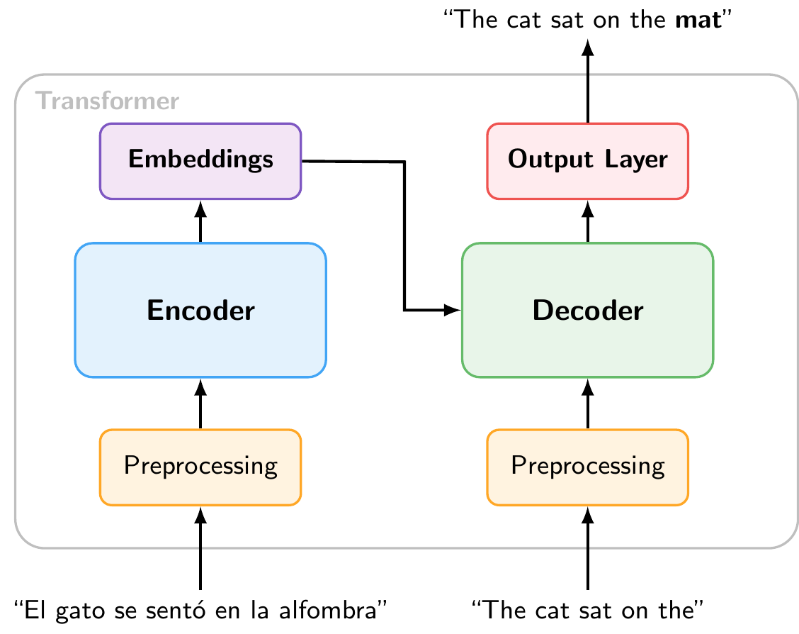
11 Large Language Models
Large Language Models (LLMs) are a specific type of foundation model that are designed to understand and generate human language. They have been at the forefront of the recent advances in generative AI and have had a profound impact on both research and applications. In this chapter, we will try to understand how they work, how they are trained, and what makes them so powerful. We will also discuss some of the challenges and limitations associated with LLMs.
11.1 Building Blocks of Large Language Models
Most modern LLMs are based on the Transformer architecture, which was introduced by Vaswani et al. (2017) in the paper “Attention is All You Need”. The original Transformer was designed for machine translation and consists of two main components: an encoder that reads the input sequence and compresses it into a set of internal representations (embeddings), and a decoder that uses those representations, together with the previously generated tokens, to produce the output sequence one token at a time.
Figure 11.1 shows a stylized encoder-decoder Transformer for translation.1 The encoder reads the Spanish input and produces internal representations (embeddings). The decoder uses these embeddings together with the English tokens generated so far to predict the next output token.
11.1.1 Encoder-only vs. Decoder-only Transformers
It turned out that many tasks do not require both components. As Figure 11.2 illustrates, two simplified variants have become widespread:
Encoder-only models (e.g., BERT, RoBERTa, DeBERTa) use only the encoder. They process the full input bidirectionally and produce rich embeddings that can be used for understanding tasks such as classification, named entity recognition, or sentiment analysis (as we did in the NLP chapter).
Decoder-only models (e.g., GPT, Claude, LLaMA, Gemini) use only the decoder. They read text left to right and are trained with an autoregressive objective (predicting the next token), making them naturally suited for text generation.
The decoder-only architecture has become dominant for generative LLMs, and it is what most people mean today when they refer to “large language models.”
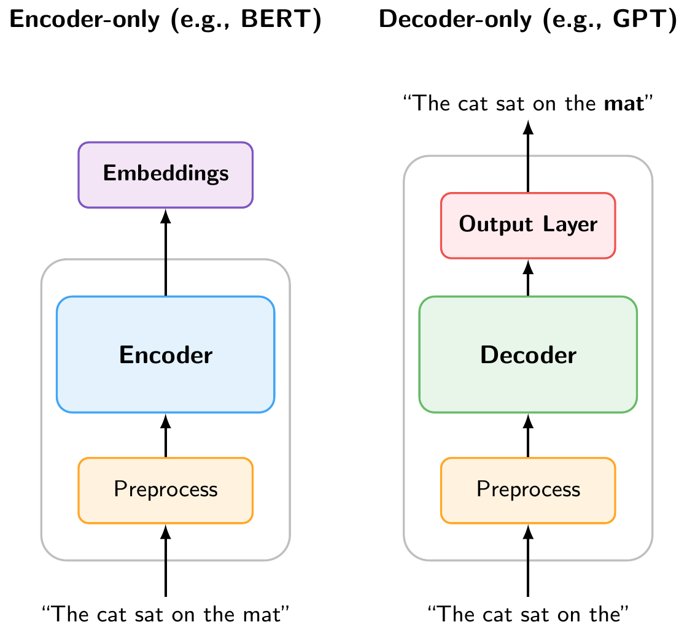
In the Python implementation, we will explore both types of models. However, for the rest of this chapter, we will focus on decoder-only autoregressive models, since they are the basis for the LLMs that have driven recent breakthroughs (ChatGPT, Claude, etc.).
11.1.2 What the Model Sees: Tokenization
In the NLP chapter, we introduced tokenization as the process of splitting text into discrete units. There, we mostly worked with word-level tokens. LLMs, however, typically use subword tokenization (such as Byte Pair Encoding), which splits text into pieces that are sometimes whole words, sometimes parts of words, and sometimes individual characters. For example, “unlikely” might be split into “un” + “likely”. This allows the model to handle rare words and different languages with a manageable vocabulary size.
Figure 11.3 is an interactive tokenizer demo that allows you to see how different tokenizers split text into tokens. You can select from several models (GPT-2, GPT-4, BERT, etc.) to see how their tokenization differs. The demo also shows the total number of tokens and characters in the input text, and you can toggle the display of token IDs.
TipSurprising LLM Failures
Because LLMs operate on tokens rather than individual characters, tokenization can be a hidden source of surprising behavior:
Character counting. When asked “How many r’s are in ‘strawberry’?”, early LLMs famously answered “2” instead of “3”. This is because “strawberry” is tokenized as something like “st” + “raw” + “berry”. The model never sees the individual letters, so counting characters within tokens is difficult. Similarly, try asking an LLM to count the dots in “………………”. Since repeated punctuation gets grouped into multi-character tokens, the model has no reliable way to count them.
Numbers. The way a number is written affects how it is tokenized. For example, “1234” might be a single token, while “1,234” could be split into “1” + “,” + “234”, and “1234.56” into yet another set of tokens. This means that the same numerical value can look very different to the model depending on its formatting, which can affect arithmetic and reasoning about quantities.
Rare words and typos. Uncommon words or misspellings get split into many small subword tokens, making them harder for the model to interpret. A domain-specific term like “macroprudential” might be broken into three or four pieces.
Try experimenting with the tokenizer demo above to see these effects for yourself! For instance, try entering the same number in different formats (1000000, 1,000,000, 1000000.00, one million) and observe how differently each one is tokenized.
Each token is associated with a unique token ID and an embedding vector that the model uses for processing the text. In the following sections, we will see how these token embeddings are transformed through the layers of the decoder to produce predictions.
NoteHow Do LLMs “See” Images?
Modern LLMs can also process images. This works by converting images into tokens, just like text. A vision encoder (typically a Vision Transformer) splits the image into small patches, encodes each patch as an embedding vector, and projects these into the same embedding space as text tokens. From that point on, the model processes image and text tokens identically through its decoder layers. This is why these models are often called multimodal: they handle different input types by converting everything into the same token-based representation.
11.1.3 Inside the Decoder
So far we have treated the decoder as a black box. Figure 11.4 shows what is inside. Each decoder layer consists of two main components applied in sequence:
- Multi-Head Self-Attention, which allows each token to gather information from all other tokens in the sequence (discussed in detail below).
- Feed-Forward Network, a simple neural network that processes each token independently, transforming its representation.
Each layer also includes residual connections and layer normalization, which help stabilize training but are omitted from the figure for clarity. A modern LLM stacks dozens to over a hundred of these identical layers on top of each other (e.g., GPT-3 used 96 layers and newer models likely use even more). Each layer refines the token representations, building increasingly abstract and context-aware features.
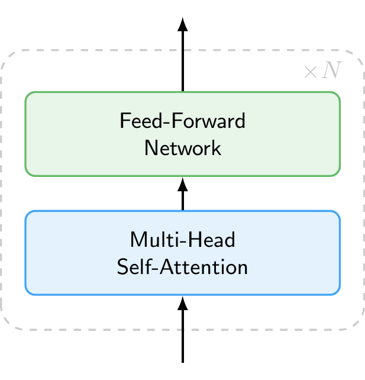
11.1.4 How the Model Processes Context: Self-Attention Mechanism
Inside the decoder, the self-attention mechanism allows the model to weigh the importance of different tokens in the input sequence when making predictions. When the model processes a token, it does not look at that token in isolation. Instead, it computes attention weights that determine how much each other token in the sequence should influence the representation of the current token. This allows the model to capture relationships between words regardless of how far apart they are in the sentence.
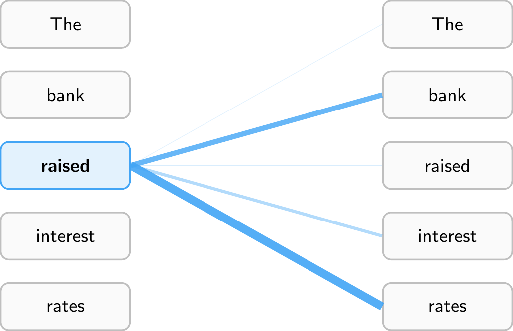
Figure 11.5 illustrates this for the sentence “The bank raised interest rates.” When processing the token “raised,” the model assigns high attention weights to “bank” (the subject performing the action) and “rates” (the object being acted upon), while giving less attention to tokens like “The.” This allows the model to understand that “raised” refers to a central bank increasing rates, not, say, raising a hand. Every token computes its own attention weights, so “interest” would attend heavily to “rates,” while “bank” might attend to “raised” and “rates” to disambiguate its meaning (financial institution vs. river bank).
Note that models have multiple attention heads, which means they compute several different sets of attention weights in parallel. This allows them to capture different types of relationships simultaneously. Furthermore, attention is computed across multiple layers, allowing the model to build up increasingly abstract representations of the input as it processes it through the network.
NoteCausal Masking
Figure 11.5 shows attention to all tokens in the sequence for illustration purposes. In practice, decoder-only models like GPT use causal masking (also called masked self-attention): each token can only attend to itself and the tokens that came before it, never to future tokens. This is what makes the model autoregressive, as it must predict the next token without peeking ahead. By contrast, encoder-only models like BERT use bidirectional attention, where each token can attend to the entire sequence in both directions. This is why BERT is well-suited for understanding tasks (it sees the full context), while decoder-only models are suited for generation (they process text strictly left to right).
11.1.5 From Representations to Predictions: Output Layer
After passing through all decoder layers, the output layer converts the final representation into a probability distribution over the entire vocabulary (Figure 11.6). Each token in the vocabulary receives a probability. In our example, given the input “The cat sat on the,” the token “mat” has the highest probability (0.42), followed by “rug” (0.23), “floor” (0.14), and so on.
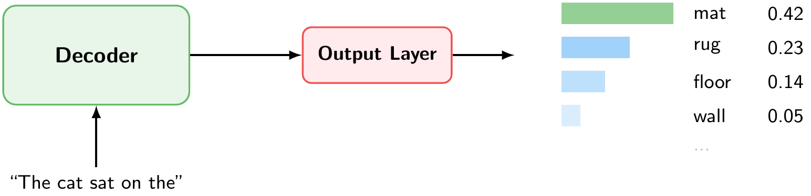
11.1.6 Putting It All Together: Autoregressive Generation
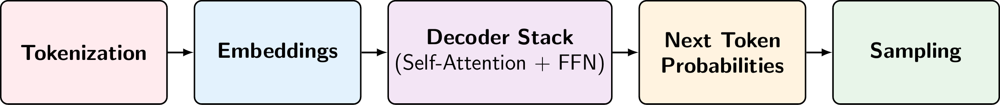
Figure 11.7 summarizes the full pipeline for generating a single token. Given an input text, the model:
- Tokenizes the text into subword tokens.
- Converts each token into an embedding vector.
- Passes the embeddings through a stack of decoder layers, each applying multihead self-attention (to gather context from all previous tokens) and a feed-forward network (to transform the representation).
- Produces next token probabilities, a probability distribution over the entire vocabulary.
- Samples the next token from this distribution.
But this only generates one token. To produce a full response, the model repeats this pipeline in a loop, a process called autoregressive generation. The predicted token is appended to the input, and the entire pipeline runs again to predict the next token. This continues until the model produces a special end-of-sequence token or reaches a maximum length.
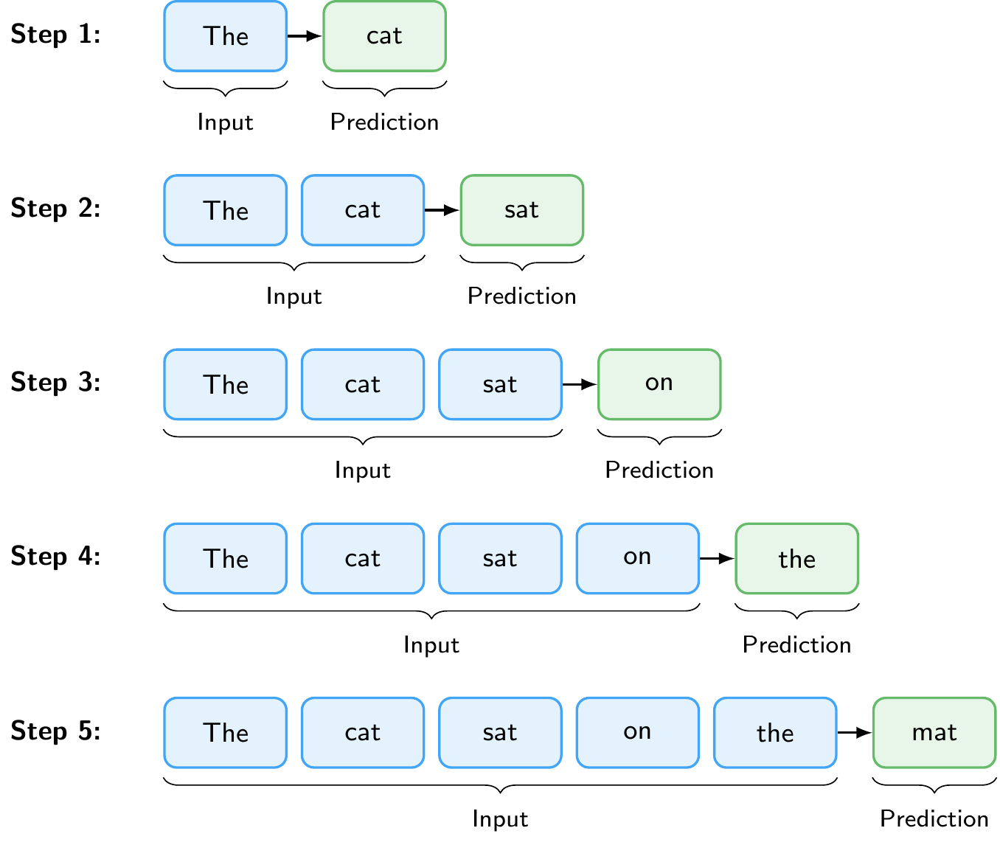
Figure 11.8 illustrates this loop. Starting from the prompt “The”, the model predicts “cat”, then takes “The cat” as input to predict “sat”, and so on, until it has generated the complete sentence “The cat sat on the mat.”
An important practical limitation is the context window (also called context length): the maximum number of tokens the model can process in a single forward pass. This limit is set during training and arises because self-attention computes relationships between all pairs of tokens, making computational cost grow quadratically with sequence length. Early models like GPT-2 had a context window of 1,024 tokens. Modern models have much larger context windows, for example, Claude Opus 4.6 and Gemini 3.1 Pro support up to 1 million tokens. The context window must accommodate both the input (prompt, instructions, any provided documents) and the generated output, which is why it is an important consideration when working with LLMs.
WarningHallucinations
LLMs can generate text that sounds confident and plausible but is factually wrong. This is called hallucination. Because the model produces text by predicting likely next tokens, not by looking up verified facts, it can fabricate citations, invent statistics, or present incorrect reasoning in fluent, authoritative prose. Hallucinations are especially dangerous precisely because they are hard to distinguish from correct output. Techniques such as Retrieval-Augmented Generation (discussed below) can help ground the model’s responses in verified sources, but they do not eliminate the problem entirely. Always verify critical claims independently, particularly for research or policy applications.
Note
The first time you run this, the model will be downloaded. This may take a moment depending on your connection. The model is cached in your browser for subsequent uses.
11.2 Training Large Language Models
11.2.1 Pre-training and Post-training
LLM training consists of two phases. During pre-training, the model learns next-token prediction on trillions of tokens from the web, books, and code (self-supervised learning). It implicitly acquires grammar, facts, and reasoning patterns, but the result is a text completion engine, not an assistant. If you type “What is inflation?”, a pre-trained model might continue with “What is deflation? What is stagflation?” rather than answering the question. The text completion demo in the previous subsection shows how the model behaves after pre-training on a simple prompt. Because the model’s knowledge comes entirely from its training data, it has a knowledge cutoff: it does not know about events or information that appeared after the data collection date. This is an important limitation in practice, and one of the reasons why techniques like Retrieval-Augmented Generation (discussed below) are used to supply the model with up-to-date information.
Post-training turns this into a useful assistant through supervised fine-tuning on curated instruction-response pairs and reinforcement learning to align the model with human preferences (RLHF) or to improve on verifiable tasks like math (RLVR). After post-training, the same prompt produces a helpful answer like “Inflation is a general increase in prices across an economy over time.”
Beyond the training done by model providers, practitioners can also fine-tune existing models on their own domain-specific data. For example, a central bank could fine-tune a model on its internal documents to improve performance on monetary policy tasks. This requires far less data and compute than pre-training from scratch, since the model already has strong general language capabilities.
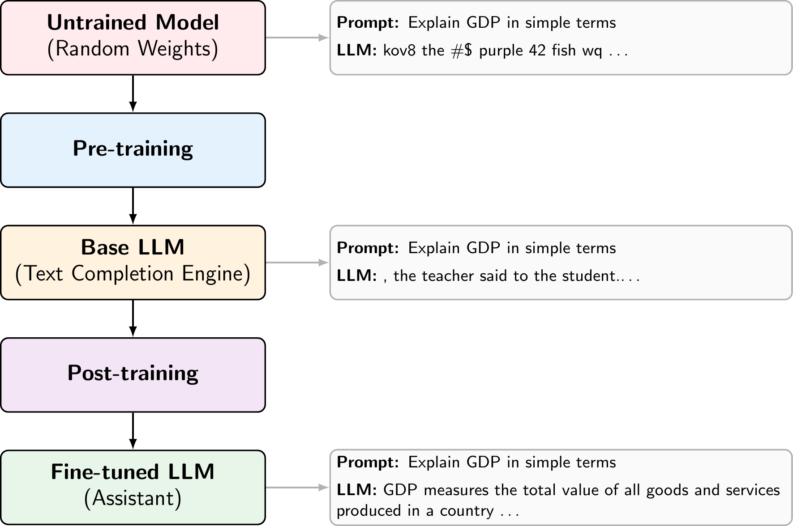
11.2.2 Scaling Laws
A key empirical finding is that LLM performance follows predictable scaling laws: loss decreases as a power law with model size, dataset size, and compute (Kaplan et al. 2020). In other words, making models larger, training them on more data, and using more compute each independently and predictably improve performance. This relationship has driven the AI industry to invest heavily in training ever-larger models on ever-larger datasets.
Scaling does more than just reduce loss. Beyond a certain model size, LLMs develop qualitatively new emergent capabilities that smaller models cannot perform reliably (Wei et al. 2022). A key example is in-context learning: the ability to perform new tasks from just a few examples provided in the prompt, without any additional training (Brown et al. 2020). These capabilities are not explicitly programmed but emerge from scale, which is one of the reasons why the push toward larger models continues.
Recently, a new class of reasoning models has pushed this idea further by scaling not just training but also inference. Models such as OpenAI’s GPT 5.2 and Anthropic’s Claude Opus 4.6 are trained with reinforcement learning to produce extended internal reasoning traces before answering. Rather than responding immediately, these models “think” through a problem step by step, which significantly improves performance on complex tasks like mathematics, coding, and multi-step logical reasoning. This represents a shift from scaling only model size and training data (training-time compute) to also scaling the amount of computation used at inference time, sometimes called test-time compute.
11.3 Interacting with Large Language Models
11.3.1 Chat Format
Users interact with LLMs through a chat format consisting of structured messages with roles: a system message that sets the model’s behavior (e.g., “You are a helpful economics tutor”), followed by alternating user and assistant turns. This structure is what distinguishes a chatbot from a raw text completion engine. In web interfaces, the system message is set by the provider and hidden from the user. When accessing models through the API, however, developers can set the system message themselves, which is a powerful way to customize the model’s behavior for specific applications.
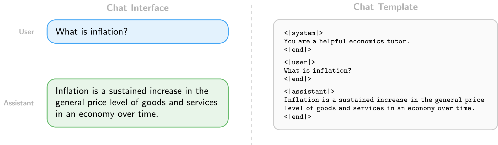
11.3.2 Writing Effective Prompts
How you write your prompts matters. Since LLMs generate responses conditioned on their input, small changes in how a task is described can significantly affect the quality of the output.
The simplest approach is zero-shot prompting: directly asking the model to perform a task without providing any examples. For instance: “Classify the following sentence as positive or negative: ‘The economy is showing signs of recovery.’” This works well for tasks the model has likely encountered during training, but may struggle with domain-specific or ambiguous tasks.
When zero-shot performance is insufficient, few-shot prompting can help. This means providing a few input-output examples in the prompt before the actual query, leveraging the model’s in-context learning ability (discussed above). For example, including three labeled sentences before asking the model to classify a new one can substantially improve accuracy on specialized tasks without any fine-tuning, because the examples help the model understand the expected format and decision boundary.
There are many other prompting strategies beyond these two, such as asking the model to reason step by step, assigning it a persona, or breaking complex tasks into smaller subtasks. In general, the more clearly and specifically you describe what you want, the better the results.
11.3.3 Using LLMs Programmatically
Beyond chat interfaces, LLMs can be accessed programmatically through APIs (Application Programming Interfaces). Major providers include OpenAI (GPT series), Anthropic (Claude), and Google (Gemini), each offering cloud-hosted models accessible via HTTP requests. In addition, open-weight models such as LLaMA (Meta) and Gemma (Google) can be downloaded and run locally using tools like Ollama, which avoids sending data to external servers and incurs no per-request costs.
An API call typically specifies:
- The model to use (e.g.,
gpt-5.2,claude-opus-4-6,gemma3:27b) - The messages in chat format (system, user, and assistant turns)
- Generation settings such as temperature (controlling randomness: 0 for near-deterministic output, higher values for more diverse responses) and max tokens (limiting the length of the generated response)
This programmatic access enables batch processing at scale, for example, classifying thousands of central bank speeches by sentiment, extracting structured data from financial reports, or summarizing large document collections. For batch processing, it is often useful to request structured output such as JSON, a standard data format that uses key-value pairs. For example, instead of a free-text response, you can instruct the model to return:
{
"sentiment": "positive",
"confidence": 0.87
}This makes responses easy to parse programmatically and integrate into data pipelines. When using cloud-based APIs, it is important to be mindful of costs, which are typically charged per token for both input and output. Running models locally with tools like Ollama eliminates these costs but requires sufficient hardware, particularly for larger models. We will explore both approaches in the Python implementation sections below.
11.3.4 Beyond Chat: RAG, Tool Use, and Agents
In a simple chat interface, the user must manually provide all relevant context. Several patterns extend LLMs beyond this by letting the model retrieve information, take actions, and operate autonomously. These patterns form a natural progression: from retrieving relevant data, to calling external tools, to full autonomous operation.
Retrieval-Augmented Generation (RAG) grounds the model in external data by retrieving relevant documents and including them in the prompt before generating a response. For example, when asked about a specific ECB policy decision, a RAG system could search a database of ECB press releases and include the most relevant passages in the prompt. This addresses the knowledge cutoff problem discussed above and reduces hallucinations without retraining the model.
Tool use allows LLMs to call external functions during generation. When the model needs to perform an action it cannot do with text alone, it generates a structured function call instead of a text response. The application executes that function and feeds the result back to the model. For example, asked “What is the current US inflation rate?”, the model could call a FRED API to retrieve the latest CPI data rather than relying on its potentially outdated training data. We will see a concrete example of this pattern in the Python implementation section below.
Agents combine these techniques into autonomous systems. An agent receives a high-level goal, breaks it down into steps, and executes them iteratively: retrieving documents, calling tools, observing results, and deciding what to do next. For example, AI-powered coding tools like Claude Code (Anthropic) and Codex (OpenAI) can explore a codebase on their own, reading files, searching for definitions, and running commands to assemble the context they need for complex tasks.
11.4 Python Implementation: Hugging Face Transformers
Let’s import the necessary libraries
import pandas as pd # Used for data manipulation
import matplotlib.pyplot as plt # Used for plotting
import seaborn as sns # Used for plotting
from huggingface_hub import login # Used to log in to Hugging Face and access datasets
from sentence_transformers import SentenceTransformer # Used for encoding sentences into vector representations
from transformers import pipeline # Used for using pre-trained models from Hugging Face for sentiment analysis
from sklearn.model_selection import train_test_split # Used for splitting the dataset into training and testing sets
from sklearn.ensemble import RandomForestClassifier # Used for training a Random Forest classifier
from sklearn.metrics import confusion_matrix, accuracy_score, roc_auc_score, recall_score, precision_score # Used for evaluating the performance of the modelWe will again use a pre-labeled dataset for sentence-level sentiment analysis of ECB speeches (Pfeifer and Marohl 2023), which is available on Hugging Face (Central Bank Communication Dataset). The dataset contains sentences from ECB speeches that have been labeled as positive or negative in terms of sentiment.
Let’s load the dataset into a pandas DataFrame
df = pd.read_csv("hf://datasets/Moritz-Pfeifer/CentralBankCommunication/Sentiment/ECB_prelabelled_sent.csv")Since we have explored the dataset in the NLP chapter, we will not go into detail about its structure here. Instead, we will focus on how to encode the sentences into vector representations using a pre-trained sentence transformer model.
11.4.1 Encoding Sentences with a Pre-trained Sentence Transformer
Suppose we want to get a dense vector representation of sentences that we can use for various downstream tasks, e.g., as input features for a machine learning model. We can use a pre-trained sentence transformer model from the Hugging Face library to achieve this.
First, we need to load the pre-trained model. We will use the “all-MiniLM-L6-v2” model, which is a small embedding model that does not require a GPU and can be run on a CPU.
model = SentenceTransformer("all-MiniLM-L6-v2")Consider the following example sentences
sentences = [
"The ECB's monetary policy is not very effective for stabilizing the economy.",
"The ECB's monetary policy is very ineffective for stabilizing the economy."
]We can encode these sentences into vector representations using the encode method of the model. This will give us a dense vector for each sentence.
embeddings = model.encode(sentences)
print(embeddings.shape)(2, 384)The output will show the shape of the embeddings, which should be (2, 384) since we have 2 sentences and the “all-MiniLM-L6-v2” model produces 384-dimensional embeddings. We can also compute the cosine similarity between the embeddings of the two sentences to see how similar they are in terms of their vector representations.
similarities = model.similarity(embeddings, embeddings)
print(similarities)tensor([[1.0000, 0.9408],
[0.9408, 1.0000]])Let’s now apply this encoding to the sentences in our dataset. We will encode all sentences in the “text” column of our DataFrame and store the resulting embeddings in a new column called “embedding”.
df["embedding"] = list(model.encode(df["text"].tolist()))Note that we did not do any preprocessing of the text before encoding, as the sentence transformer model can handle raw text input, and does not require tokenization or other preprocessing steps. The model will take care of that internally when encoding the sentences.
11.4.2 Using Sentence Embeddings for Sentiment Analysis
Let’s use the sentence embeddings as input features for a machine learning model to perform sentiment analysis. We will use a simple Random Forest classifier for this task. First, we need to split the dataset into a training set and a testing set
X = df['embedding'].to_list() # Convert the embeddings from a pandas Series to a list of numpy arrays
y = df['sentiment']
X_train, X_test, y_train, y_test = train_test_split(X, y, test_size=0.2, random_state=42, stratify=y) # We use 20% of the data for testing, set a random state for reproducibility, and stratify to maintain class balanceThen, we can train a Random Forest classifier on the training data
clf_rf = RandomForestClassifier(n_estimators=100, random_state = 42).fit(X_train, y_train)To evaluate the performance of the model, we can make predictions on the testing set and calculate metrics such as accuracy, precision, and recall
y_pred_rf = clf_rf.predict(X_test)
y_proba_rf = clf_rf.predict_proba(X_test)
print(f"Accuracy: {accuracy_score(y_test, y_pred_rf)}")Accuracy: 0.9512670565302144print(f"Precision: {precision_score(y_test, y_pred_rf)}")Precision: 0.9560439560439561print(f"Recall: {recall_score(y_test, y_pred_rf)}")Recall: 0.9109947643979057print(f"ROC AUC: {roc_auc_score(y_test, y_proba_rf[:, 1])}")ROC AUC: 0.9940977529186044Our machine learning model does perform much better than using the classical TF-IDF features, which we used in the NLP chapter. This shows that the sentence embeddings from the pre-trained model capture more meaningful information about the sentences, which allows the Random Forest classifier to make better predictions about the sentiment of the sentences.
We can also look at the confusion matrix to see how well the model is performing in terms of true positives, true negatives, false positives, and false negatives
conf_mat = confusion_matrix(y_test, y_pred_rf, labels=[1, 0]).transpose() # Transpose the sklearn confusion matrix to match the convention in the lecture
sns.heatmap(conf_mat, annot=True, cmap='Blues', fmt='g', xticklabels=['Positive', 'Negative'], yticklabels=['Positive', 'Negative'])
plt.xlabel("Actual")
plt.ylabel("Predicted")
plt.show()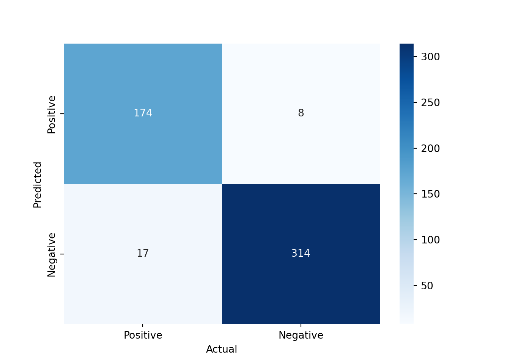
11.4.3 Using Pre-trained Models from Hugging Face for Sentiment Analysis
Instead of using the sentence embeddings as input features for a separate machine learning model, we can also directly use a pre-trained model from Hugging Face that is fine-tuned for sentiment analysis.
analyzer = pipeline("sentiment-analysis")
result = analyzer("The ECB's monetary policy is very ineffective for stabilizing the economy.")
print(result)[{'label': 'NEGATIVE', 'score': 0.9997608065605164}]This uses a pre-trained model that has been fine-tuned on a large dataset for sentiment analysis. The output will show the predicted label (e.g., “NEGATIVE”) and the confidence score for that prediction. To see which model is being used, we can check the default model used by the pipeline
print(analyzer.model)DistilBertForSequenceClassification(
(distilbert): DistilBertModel(
(embeddings): Embeddings(
(word_embeddings): Embedding(30522, 768, padding_idx=0)
(position_embeddings): Embedding(512, 768)
(LayerNorm): LayerNorm((768,), eps=1e-12, elementwise_affine=True)
(dropout): Dropout(p=0.1, inplace=False)
)
(transformer): Transformer(
(layer): ModuleList(
(0-5): 6 x TransformerBlock(
(attention): DistilBertSdpaAttention(
(dropout): Dropout(p=0.1, inplace=False)
(q_lin): Linear(in_features=768, out_features=768, bias=True)
(k_lin): Linear(in_features=768, out_features=768, bias=True)
(v_lin): Linear(in_features=768, out_features=768, bias=True)
(out_lin): Linear(in_features=768, out_features=768, bias=True)
)
(sa_layer_norm): LayerNorm((768,), eps=1e-12, elementwise_affine=True)
(ffn): FFN(
(dropout): Dropout(p=0.1, inplace=False)
(lin1): Linear(in_features=768, out_features=3072, bias=True)
(lin2): Linear(in_features=3072, out_features=768, bias=True)
(activation): GELUActivation()
)
(output_layer_norm): LayerNorm((768,), eps=1e-12, elementwise_affine=True)
)
)
)
)
(pre_classifier): Linear(in_features=768, out_features=768, bias=True)
(classifier): Linear(in_features=768, out_features=2, bias=True)
(dropout): Dropout(p=0.2, inplace=False)
)We can see that it is using DistilBERT as the model for sentiment analysis.
Let’s apply this sentiment analysis pipeline to the sentences in our dataset and see how well it performs compared to our Random Forest classifier that used sentence embeddings as features.
results = analyzer(df["text"].tolist(), batch_size=32)
df["hf_sentiment"] = [int(r['label'] == "POSITIVE") for r in results]
df["hf_score"] = [r['score'] if r['label'] == "POSITIVE" else 1 - r['score'] for r in results]Now we can evaluate the performance of the Hugging Face sentiment analysis model using the same metrics as before
test_idx = y_test.index
print(f"Accuracy: {accuracy_score(df.loc[test_idx, 'sentiment'], df.loc[test_idx, 'hf_sentiment'])}")Accuracy: 0.9298245614035088print(f"Precision: {precision_score(df.loc[test_idx, 'sentiment'], df.loc[test_idx, 'hf_sentiment'])}")Precision: 0.863849765258216print(f"Recall: {recall_score(df.loc[test_idx, 'sentiment'], df.loc[test_idx, 'hf_sentiment'])}")Recall: 0.9633507853403142print(f"ROC AUC: {roc_auc_score(df.loc[test_idx, 'sentiment'], df.loc[test_idx, 'hf_score'])}")ROC AUC: 0.9794478228350298The performance of the Hugging Face model is not quite as good as our Random Forest classifier that used sentence embeddings. This is likely due to the fact that the pre-trained model was not fine-tuned on our specific dataset of ECB speeches but on movie reviews.
NoteFine-Tuning Pre-trained Models
The transformers library also allows us to fine-tune pre-trained models on our specific dataset, which can significantly improve the performance of the model for our specific task. However, fine-tuning a large language model can be computationally expensive and may require access to a GPU. Therefore, we will not cover the fine-tuning process in this lecture, but it is an important topic to explore if you want to achieve the best possible performance on your specific task.
11.4.4 Other NLP Tasks with Pre-trained Models
The transformers library can also be used for many other NLP tasks. For example, we can use a pre-trained model for text generation
generator = pipeline(model="openai-community/gpt2")
generator("The ECB's monetary policy is very", do_sample=False)[{'generated_text': "The ECB's monetary policy is very important. It is important to understand that the ECB is not a central bank. It is not a central bank. It is not a central bank. It is not a central bank. It is not a central bank. It is not a central bank. It is not a central bank. It is not a central bank. It is not a central bank. It is not a central bank. It is not a central bank. It is not a central bank. It is not a central bank. It is not a central bank. It is not a central bank. It is not a central bank. It is not a central bank. It is not a central bank. It is not a central bank. It is not a central bank. It is not a central bank. It is not a central bank. It is not a central bank. It is not a central bank. It is not a central bank. It is not a central bank. It is not a central bank. It is not a central bank. It is not a central bank. It is not a central bank. It is not a central bank. It is not a central bank. It is not a central bank. It is not a central bank. It is not a central bank. It is"}]In this example, we are using a pre-trained GPT-2 model to generate text based on the input prompt “The ECB’s monetary policy is very”.
We can also use a pre-trained model for zero-shot classification, which allows us to classify text into categories without having to fine-tune the model on a specific dataset
classifier = pipeline("zero-shot-classification", model="facebook/bart-large-mnli")Using this zero-shot classification pipeline, we can classify sentences into categories based on the content of the sentences, even if the model has not been specifically trained on those categories. For example, we can classify sentences from ECB speeches into categories such as “monetary policy”, “fiscal policy”, or “other” based on their content.
sequences_to_classify = [
"The European Central Bank is committed to price stability.",
"Governments need to run a balanced budget.",
"Leslie Nielsen was a great actor."]
candidate_labels = ["monetary policy", "fiscal policy", "other"]
for sequence in sequences_to_classify:
result = classifier(sequence, candidate_labels)
print(f"Sequence: {sequence}")
print(f"Predicted label: {result['labels'][0]}")
print(f"Confidence score: {result['scores'][0]:.4f}")
print("------")Sequence: The European Central Bank is committed to price stability.
Predicted label: monetary policy
Confidence score: 0.9034
------
Sequence: Governments need to run a balanced budget.
Predicted label: fiscal policy
Confidence score: 0.8744
------
Sequence: Leslie Nielsen was a great actor.
Predicted label: other
Confidence score: 0.8404
------11.5 Python Implementation: Using LLM APIs
Let’s load the necessary libraries
from openai import OpenAI # Used for accessing LLMs using the OpenAI API
import pandas as pd # Used for data manipulation
import matplotlib.pyplot as plt # Used for plotting
from huggingface_hub import login # Used to log in to Hugging Face and access datasets
from pydantic import BaseModel, ValidationError # Used for validating the output from the LLM
import json # Used for parsing JSON output from the LLMWe will use Ollama, which allows us to run large language models locally on our machine without needing to access a cloud-based API. This is useful for testing and development purposes, as it allows us to work with LLMs without incurring costs or needing an internet connection.
First, we need to download a pre-trained model that we can run locally using Ollama. We can do this using the ollama pull command in the terminal. For example, we can download the Gemma 3 270m model, which is a smaller version of the Gemma 3 family that can run on a local machine without requiring a GPU.
#!ollama pull gemma3:270mmodel = "gemma3:270m" # The name of the model we downloaded and want to use with OllamaTo use the Ollama API, we then need to start the Ollama server on our machine. We can do this using the following command in the terminal:
ollama serveThis will start the Ollama server and make the LLM API available at http://localhost:11434/v1. For convenience, we can also start the Ollama server from within our Python code using the subprocess module, which allows us to run shell commands from Python.
import subprocess
process = subprocess.Popen(["ollama", "serve"], stdout=subprocess.DEVNULL, stderr=subprocess.DEVNULL)Now that we have the Ollama server running, we can create a client to access the LLM API. The OpenAI library provides a convenient interface for accessing the LLM API, and we can use it to create a client that connects to our local Ollama server.
client = OpenAI(
base_url = "http://localhost:11434/v1", # Ollama endpoint for accessing the local LLM API
api_key = "" # No API key is needed for the local Ollama API, but we need to provide an empty string to avoid authentication errors
)Then, we can use the client to send a request to the LLM API and get a response. For example, we can send a simple chat completion request to the API and print the response.
response = client.chat.completions.create(
model = model,
messages = [
{"role": "system", "content": "You are a helpful assistant."},
{"role": "user", "content": "What is inflation?"},
]
)
print(f"{response.choices[0].message.role}: {response.choices[0].message.content}")assistant: Inflation is a sustained increase in the price level of goods and services in a country or economy over a prolonged period. It's often described as a "tipping point" where the cost of production increases, leading to a decrease in the purchasing power of the money circulating in the economy.In this example, we are sending a chat completion request to the LLM API using the “gemma3:270m” model, which is the smallest version of Gemma 3, an open-source model by Google, that can run on a local machine without requiring a GPU. The request includes a system message that sets the context for the conversation and a user message that asks the question “What is inflation?”. The response from the API includes a message from the assistant role that provides an answer to the user’s question.
Using APIs can be very costly if we are making a large number of requests. We can check how many tokens we have used in our request and response to get an idea of the cost of using the API. The OpenAI library provides a convenient way to access the token usage information from the response.
print(f"Tokens used: {response.usage.total_tokens}")Tokens used: 81print(f"Input tokens: {response.usage.prompt_tokens}")Input tokens: 21print(f"Output tokens: {response.usage.completion_tokens}")Output tokens: 60
NoteAPI Pricing
Since we are using a local model with Ollama, we do not incur any costs for using the API. However, when using cloud-based APIs, costs are typically charged per token (both input and output). For example, at the time of writing (early 2026), OpenAI charges $1.75 per million input tokens and $14.00 per million output tokens for GPT 5.2. Pricing changes frequently, so always check the provider’s current pricing page before running large batch jobs.
11.5.1 Exploring the Probabilistic Nature of LLMs
LLMs are probabilistic models since they generate output based on a probability distribution over possible next tokens. This is why the same input can lead to different outputs each time we send a request to the API. The model samples from this probability distribution to generate its response, which can lead to variability in the output even for the same input. This is an important aspect of LLMs to keep in mind, especially when using them for tasks that require consistency or when evaluating their performance, as the variability in the output can affect the results.
Consider the following function that sends a request to the LLM API to answer a question about the most beautiful city in Europe. If we call this function multiple times, we may get different answers each time due to the probabilistic nature of the model.
def city_question():
response = client.chat.completions.create(
model = model,
messages = [
{"role": "system", "content": "You are a helpful assistant."},
{"role": "user", "content": "What is the most beautiful city in Europe? Answer with one word."},
]
)
return response.choices[0].message.contentNow we can call this function multiple times to see the variability in the output.
for ii in range(10):
print(f"Run {ii + 1}: {city_question()}")Run 1: Paris
Run 2: Rome
Run 3: Paris
Run 4: Paris
Run 5: Paris
Run 6: Barcelona
Run 7: Rome
Run 8: Luxembourg
Run 9: Paris
Run 10: ParisYou can see that it often answers with “Paris”, but sometimes with “Rome”, “Barcelona”, or other cities. This illustrates an important property of LLMs: because they sample from a probability distribution over tokens, there is no guarantee that the same input will produce the same output. This variability is particularly relevant for tasks that require reliability and consistency, such as automated data extraction or classification pipelines. Furthermore, we also have no guarantee that the output will be factually correct, as the model may generate plausible-sounding but incorrect answers (known as “hallucinations”).
Temperature and Sampling
When we send a request to the LLM API, we can also specify some parameters that control the behavior of the model. For example, we can specify the temperature parameter, which adjusts the probability distribution of the model’s output. A higher temperature will result in more random output, while a lower temperature will result in more deterministic output.
def ask_question(question, temperature=0.7, top_p=0.9):
response = client.chat.completions.create(
model = model,
messages = [
{"role": "system", "content": "You are a helpful assistant."},
{"role": "user", "content": question},
],
temperature=temperature, # Higher temperature for more random output
top_p=top_p, # Nucleus sampling parameter to control the diversity of the output
)
return response.choices[0].message.contentNow we can ask the same question with different temperature settings to see how it affects the output of the model.
question = "Who is the best Olympic athlete of all time? Only provide the name without any explanations or additional text."
print("Temperature = 0.0 (Least random output):")Temperature = 0.0 (Least random output):for ii in range(3):
print(f"Run {ii + 1}: {ask_question(question, temperature=0.0)}")Run 1: Simone Biles
Run 2: Simone Biles
Run 3: Simone Bilesprint("\nTemperature = 0.7 (More random output):")
Temperature = 0.7 (More random output):for ii in range(3):
print(f"Run {ii + 1}: {ask_question(question, temperature=0.7)}")Run 1: Simone Biles
Run 2: Simone Biles
Run 3: Simone Bilesprint("\nTemperature = 2.0 (Even more random output):")
Temperature = 2.0 (Even more random output):for ii in range(3):
print(f"Run {ii + 1}: {ask_question(question, temperature=2.0)}")Run 1: Simone Biles
Run 2: Winston Gomberg
Run 3: Olympic medalistSimilarly, we can also specify the top_p parameter, which controls the nucleus sampling of the model’s output. For example, we can set top_p to 0.9, which means that the model will only consider the top 90% of the probability mass when generating the output. Thus, a lower top_p will result in more focused output, while a higher top_p will result in more diverse output.
print("Top-p = 0.1 (More focused output):")Top-p = 0.1 (More focused output):for ii in range(3):
print(f"Run {ii + 1}: {ask_question(question, top_p=0.1)}")Run 1: Simone Biles
Run 2: Simone Biles
Run 3: Simone Bilesprint("\nTop-p = 0.9 (More diverse output):")
Top-p = 0.9 (More diverse output):for ii in range(3):
print(f"Run {ii + 1}: {ask_question(question, top_p=0.9)}")Run 1: Simone Biles
Run 2: Simone Biles
Run 3: Simone BilesNote that if neither temperature nor top_p is specified, the model will use the default values. These default values may differ between models and providers.
11.5.2 Zero-Shot and Few-Shot Classification
For this section, we will again use a pre-labeled dataset for sentence-level sentiment analysis of ECB speeches (Pfeifer and Marohl 2023), which is available on Hugging Face (Central Bank Communication Dataset). The dataset contains sentences from ECB speeches that have been labeled as positive or negative in terms of sentiment.
Let’s load the dataset into a pandas DataFrame
df = pd.read_csv("hf://datasets/Moritz-Pfeifer/CentralBankCommunication/Sentiment/ECB_prelabelled_sent.csv")Then, we can define a function that takes a sentence as input and uses the LLM API to classify the sentiment of the sentence as positive or negative. We will use a zero-shot classification approach, where we provide the model with a prompt that describes the task and the possible labels, but we do not provide any examples of labeled sentences.
def classify_sentiment(sentence):
prompt = f"""Read the following sentence from a central bank speech and decide whether it expresses an optimistic or pessimistic view of the economy.
Sentence: "{sentence}"
Answer with exactly one word: 'positive' if optimistic, 'negative' if pessimistic."""
response = client.chat.completions.create(
model = model,
messages = [
{"role": "system", "content": "You are a helpful assistant that classifies the sentiment of sentences."},
{"role": "user", "content": prompt},
]
)
return response.choices[0].message.content.strip().lower()Now we can apply this function to the sentences in our dataset to get the predicted sentiment labels from the LLM API.
pd.DataFrame({
"sentence": df["text"].iloc[949:959],
"true_sentiment": df["sentiment"].iloc[949:959],
"predicted_sentiment": df["text"].iloc[949:959].apply(classify_sentiment)
}) sentence ... predicted_sentiment
949 47 in any case economic interdependence will i... ... negative
950 over the last 15 years the financial sector ha... ... negative
951 first the integration of our economies and wit... ... negative
952 we expect that further deregulation as well as... ... negative
953 output growth has been gathering pace througho... ... negative
954 in this regard the crisis has uncovered four s... ... negative
955 the second challenge concerns another aspect o... ... negative
956 6 such differences in institutional quality ar... ... negative
957 third a number of other factors show up in an ... ... negative
958 in 2007 the us current account deficit amounte... ... negative
[10 rows x 3 columns]It seems to predict always negative even though the sentences are positive. This is likely partially due to the fact that the model is very small (only 270 million parameters) and has limited reasoning capabilities.
Let’s provide the model with a few examples of sentences labeled as positive or negative to see if it can learn from these examples and improve its predictions. This is known as few-shot classification.
def classify_sentiment_few_shot(sentence):
prompt = f"""Read the following sentence from a central bank speech and decide whether it expresses an optimistic or pessimistic view of the economy.
Sentence: "{sentence}"
Here are some examples of sentences labeled as positive or negative:
- positive: "over the last 15 years the financial sector has grown significantly faster than other parts of the economy."
- negative: "in all scenarios a deep recession is envisaged in the severe scenario real gdp would fall by 12 percent in 2020"
- positive: "first the integration of our economies and with it the convergence of our member states has also greatly increased"
- negative: "on the other hand if the fiscal starting position is not particularly solid when an economic downturn sets in there may come a point where budget deficits become excessive"
Answer with exactly one word: 'positive' if optimistic, 'negative' if pessimistic."""
response = client.chat.completions.create(
model = model,
messages = [
{"role": "system", "content": "You are a helpful assistant that classifies the sentiment of sentences."},
{"role": "user", "content": prompt},
]
)
return response.choices[0].message.content.strip().lower()Now we can apply this few-shot classification function to the sentences in our dataset to see if it improves the predictions.
pd.DataFrame({
"sentence": df["text"].iloc[949:959],
"true_sentiment": df["sentiment"].iloc[949:959],
"predicted_sentiment": df["text"].iloc[949:959].apply(classify_sentiment_few_shot)
}) sentence ... predicted_sentiment
949 47 in any case economic interdependence will i... ... negative
950 over the last 15 years the financial sector ha... ... negative
951 first the integration of our economies and wit... ... negative
952 we expect that further deregulation as well as... ... positive
953 output growth has been gathering pace througho... ... negative
954 in this regard the crisis has uncovered four s... ... positive
955 the second challenge concerns another aspect o... ... negative
956 6 such differences in institutional quality ar... ... negative
957 third a number of other factors show up in an ... ... negative
958 in 2007 the us current account deficit amounte... ... negative
[10 rows x 3 columns]This does not seem to work much better. This is likely because the model is still very small and not that smart, and also because the examples we provided may not be representative enough of the sentences in our dataset. In practice, few-shot classification can work well with larger and more powerful models, and with carefully chosen examples that are representative of the task at hand.
11.5.3 Structured Output Generation
LLMs can also be used to generate structured output, such as JSON or XML, which can be useful for tasks that require a specific format for the output. For example, we can ask the model to extract specific information from a text and return it in a structured format.
def extract_information(sentence):
prompt = f"""Extract the growth rate from the following sentence: "{sentence}"
Example: If the growth rate is X%, return it in the following JSON format:
{{
"growth_rate": X
}}
"""
response = client.chat.completions.create(
model = model,
messages=[
{"role": "system", "content": "You are a helpful assistant that extracts structured information from sentences."},
{"role": "user", "content": prompt},
]
)
return response.choices[0].message.content.strip()Now we can apply this function to a sentence in our dataset to see how well it extracts the information and returns it in the specified JSON format.
llm_output = extract_information("The economy is expected to grow by 1.4% in the next quarter.")
print(llm_output)Okay, I understand. I will extract the growth rate from the provided sentence. I will respond with a JSON object that represents the growth rate, formatted as described in the question.Unfortunately, the LLM also outputs json code fences, e.g., json ..., which prevents us from parsing the output directly as JSON. Thus, we need to remove the code fences from the output before we can parse it as JSON.
llm_output = llm_output.replace("```json", "").replace("```", "").strip()
print(llm_output)Okay, I understand. I will extract the growth rate from the provided sentence. I will respond with a JSON object that represents the growth rate, formatted as described in the question.Now we can parse the output as JSON and validate it using Pydantic to ensure that it has the correct structure and data types. First, we need to define a Pydantic model that specifies the expected structure of the output.
class GrowthRate(BaseModel):
growth_rate: floatThen, we can parse the output from the LLM and validate it against the Pydantic model.
try:
parsed = json.loads(llm_output)
validated = GrowthRate(**parsed)
print(validated)
print(f"Extracted growth rate: {validated.growth_rate}%")
except (json.JSONDecodeError, ValidationError) as e:
print("Validation failed:", e)Validation failed: Expecting value: line 1 column 1 (char 0)11.5.4 Expanding Capabilities of LLMs with Tools
LLMs can also be used in combination with external tools to perform tasks that require capabilities beyond text generation. Suppose we want our LLM to generate random numbers as part of its output. A naive approach would be to ask the LLM to generate a random number directly in its response.
def generate_random_number():
response = client.chat.completions.create(
model = model,
messages = [
{"role": "system", "content": "You are a professional random number generator. You only reply with a uniformly distributed random number between 1 and 100. Do not provide any explanations or additional text."},
{"role": "user", "content": "Generate a random number now."},
]
)
return response.choices[0].message.contentWe can then call this function to get a random number from the LLM.
random_numbers = []
N = 1000
for ii in range(N):
# Generate a random number
random_number = generate_random_number()
# Check if the response is a valid number between 1 and 100
try:
random_number = int(random_number)
if 1 <= random_number <= 100:
random_numbers.append(random_number)
else:
print(f"Invalid number generated: {random_number}")
except ValueError:
print(f"Non-numeric response generated: {random_number}")
if (ii + 1) % 25 == 0:
print(f"{ii + 1} of {N}...")Non-numeric response generated: random
Invalid number generated: 0
25 of 1000...
Invalid number generated: 0
Invalid number generated: 0
Invalid number generated: 0
Invalid number generated: 0
Invalid number generated: 0
50 of 1000...
Non-numeric response generated: ```
1
```
Invalid number generated: 0
Invalid number generated: 0
Non-numeric response generated: ```
0
```
Invalid number generated: 0
75 of 1000...
Invalid number generated: 0
Invalid number generated: 0
Invalid number generated: 0
100 of 1000...
Invalid number generated: 0
125 of 1000...
Invalid number generated: 0
Non-numeric response generated: 1.
Invalid number generated: 0
150 of 1000...
Invalid number generated: 0
Invalid number generated: 0
Non-numeric response generated: ...1
Non-numeric response generated: ...1
175 of 1000...
200 of 1000...
225 of 1000...
Invalid number generated: 0
Non-numeric response generated: ```
1
```
Invalid number generated: 0
Invalid number generated: 0
Invalid number generated: 0
Invalid number generated: 0
250 of 1000...
Invalid number generated: 0
275 of 1000...
Invalid number generated: 0
Invalid number generated: 0
300 of 1000...
Non-numeric response generated: ```
2
```
325 of 1000...
Invalid number generated: 0
350 of 1000...
Invalid number generated: 0
Invalid number generated: 0
375 of 1000...
Invalid number generated: 0
Invalid number generated: 0
Invalid number generated: 0
400 of 1000...
Non-numeric response generated: ```
72
```
Invalid number generated: 0
Non-numeric response generated: ```
0
```
425 of 1000...
Invalid number generated: 0
Non-numeric response generated: ```
1
```
Invalid number generated: 0
450 of 1000...
Invalid number generated: 0
Invalid number generated: 0
475 of 1000...
Invalid number generated: 0
Invalid number generated: 0
500 of 1000...
Invalid number generated: 0
525 of 1000...
Invalid number generated: 0
Invalid number generated: 0
Invalid number generated: 0
550 of 1000...
Invalid number generated: 0
Invalid number generated: 0
Invalid number generated: 0
Invalid number generated: 0
Invalid number generated: 0
575 of 1000...
Invalid number generated: 0
Invalid number generated: 0
Non-numeric response generated: ```
1
```
Invalid number generated: 0
Invalid number generated: 0
600 of 1000...
Invalid number generated: 0
Invalid number generated: 0
625 of 1000...
Invalid number generated: 0
Invalid number generated: 0
Invalid number generated: 0
650 of 1000...
Non-numeric response generated: ```python
import random
print(random.randint(1, 100))
```
Non-numeric response generated: Just a single number between 1 and 100.
Non-numeric response generated: ```
2
```
Invalid number generated: 0
Non-numeric response generated: ```
42
```
675 of 1000...
Invalid number generated: 0
Invalid number generated: 0
Invalid number generated: 0
Invalid number generated: 0
700 of 1000...
Invalid number generated: 0
Invalid number generated: 0
Invalid number generated: 0
725 of 1000...
Invalid number generated: 0
Invalid number generated: 0
Invalid number generated: 0
Invalid number generated: 101
750 of 1000...
Non-numeric response generated: ...1
775 of 1000...
Invalid number generated: 0
Invalid number generated: 0
Invalid number generated: 0
800 of 1000...
825 of 1000...
Non-numeric response generated: ```python
import random
```
Invalid number generated: 0
Invalid number generated: 0
Invalid number generated: 0
Invalid number generated: 0
Invalid number generated: 0
850 of 1000...
Invalid number generated: 0
Invalid number generated: 0
Invalid number generated: 0
875 of 1000...
Invalid number generated: 0
Non-numeric response generated: **5**
Invalid number generated: 0
Non-numeric response generated: ```
0
```
900 of 1000...
Invalid number generated: 0
925 of 1000...
Invalid number generated: 0
950 of 1000...
Invalid number generated: 0
Invalid number generated: 0
975 of 1000...
Invalid number generated: 0
Non-numeric response generated: 1. 0
Invalid number generated: 0
Invalid number generated: 0
Invalid number generated: 0
1000 of 1000...And we can plot a histogram of the generated random numbers to see if they are uniformly distributed between 1 and 100.
plt.hist(random_numbers, bins=range(1, 101), edgecolor='black')
plt.xlabel('Random Number')
plt.ylabel('Frequency')
plt.title('Histogram of Generated Random Numbers')
plt.show()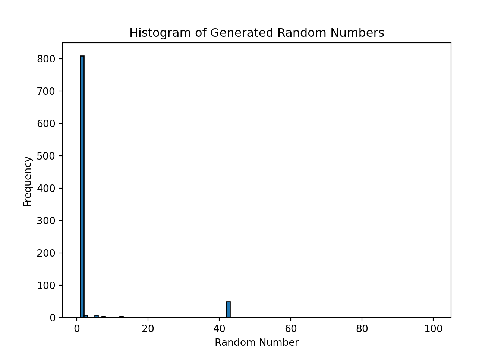
Most of the time it chose to output 1 or 42, which is not surprising since LLMs are not designed to generate truly random numbers. Their output reflects the patterns in the training data, and they may have learned that certain numbers are more common or more likely to be generated in response to certain prompts. To generate truly random numbers, it is better to use a dedicated random number generator tool or library, such as the random module in Python, which uses a pseudorandom number generator algorithm to produce random numbers that are uniformly distributed.
However, we can give LLMs the ability to use external tools to perform tasks that they are not designed for. For example, we can create a tool that generates random numbers and then allow the LLM to call this tool as part of its response generation process. This way, we can leverage the capabilities of the LLM for natural language understanding and generation, while using the external tool for generating truly random numbers.
Note
Note: we show the following code for illustration only, as the small model we use does not support tool calling.
import random
# The actual Python function that generates a random number
def random_number_tool():
return random.randint(1, 100)
# The tool schema that tells the LLM what tools are available and how to call them
tools = [
{
"type": "function",
"function": {
"name": "random_number_tool",
"description": "Generate a uniformly distributed random number between 1 and 100",
"parameters": {
"type": "object",
"properties": {},
"required": []
}
}
}
]Note that the tool schema only describes the tool to the LLM. It does not contain the actual Python function. It is the LLM that decides whether to call the tool based on the schema, and it is up to our code to execute the actual function and return the result to the LLM. We can now define a function that sends a request to the LLM API, checks if the model wants to call a tool, executes the tool if needed, and sends the result back to the LLM to generate the final response.
def generate_random_number_with_tool():
messages = [
{"role": "system", "content": "You are a professional random number generator. Use the random_number_tool to generate a uniformly distributed random number between 1 and 100. Only reply with the number."},
{"role": "user", "content": "Generate a random number now."},
]
# First API call: the model sees the available tools and decides whether to use one
response = client.chat.completions.create(
model = model,
messages = messages,
tools = tools
)
# Check if the model requested a tool call
if response.choices[0].message.tool_calls:
print("Model requested a tool call. Executing the tool...")
tool_call = response.choices[0].message.tool_calls[0]
# Execute the actual Python function
result = random_number_tool()
# Append the assistant's tool request and the tool result to the conversation
messages.append(response.choices[0].message)
messages.append({
"role": "tool",
"tool_call_id": tool_call.id,
"content": str(result)
})
# Second API call: the model generates a final response using the tool result
response = client.chat.completions.create(
model = model,
messages = messages,
tools = tools
)
return response.choices[0].message.contentWith this setup, the LLM can now generate truly random numbers by calling the external tool, while still leveraging its natural language understanding and generation capabilities for the rest of the conversation. Unfortunately, Gemma 3 (270m) is not able to use tools, but larger and more powerful models can learn to use tools effectively, which can significantly expand their capabilities and allow them to perform a wider range of tasks.